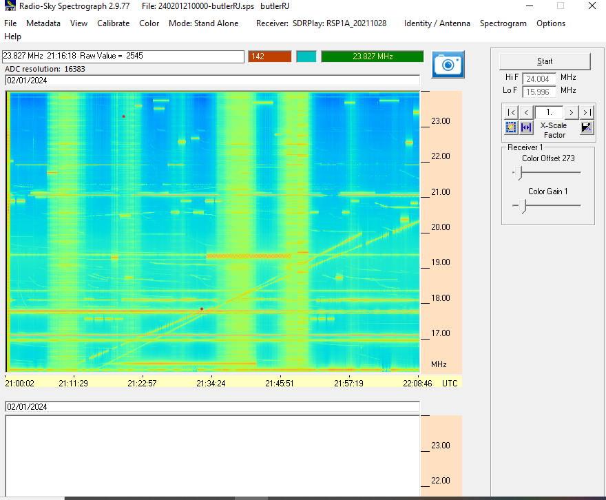
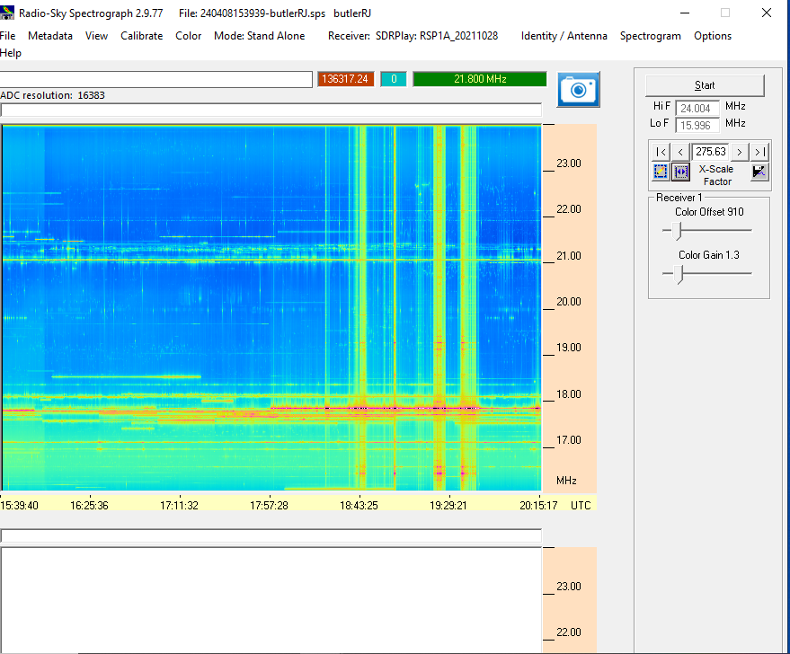

Radio Telescope Data Collection
This showcases data showcasing Io storms [or lack thereof] from my actual dual dipole setup as compared with the predictive software Radio Jupiter Pro. Both gahtering data of existing storms and non detectable or non existant storms on specific dates are both important as they show sources of interference and ways that detection can change due to outside factors.
| DATE | STORM TYPE [A,B, or C] | DURATION/TIME | IMAGE OF RSS CHART | OBSERVATIONS |
|---|---|---|---|---|
| 2/1/24 | A/C [supposedly] |
UNSURE (Jupiter not seen) → Pretty sure Solar bands seen |
 |
Solar emissions on top of possible Jupiter, hard to see Imported into skypipe, galactic background hump seen |
| 4/8/24 | Correlating with Eclipse | 11:19-4:15 PM |  | Vertical Bands from the eclipse, unsure of what it is, could be correlated |
| 4/18/24 | general measurment, Jupiter exiting beam | 4:00-6:00 PM |

|
still vertical bands repersenting stations or interference, unsure what it could be |
| 4/25/24 | general measurment | 4:00-5:30 PM |

|
Still seeing reflection of interference at 18 mHZ, no clue what this could be dueto overload and needing gain reduction in SDRplay2RSs |